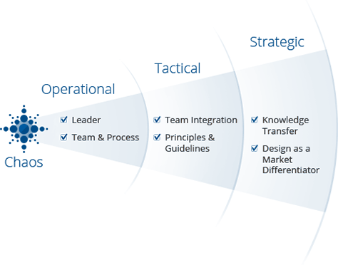
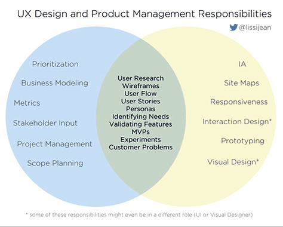

“Strategic designers influence the what and the why at their company.” — Yury Vetrov of UX Matters
Companies that fail to include designers in higher level discussions and just expect them to produce mock-ups often lack in maturity. However, it may also be because the designer is short-sighted in their abilities. It is up to the designer to build their authority at the operational and tactical levels of maturity. Then, they can fight their way to a strategic role. It is important for a designer to do this because not only is their good design valuable, but they also have a good understanding of the user’s needs. This insight is essentially necessary in the decision making process.
UX Maturity Levels Managers and designers will often have responsibilities that overlap. Most companies will find that their number one desire is to solve any problems a customer or a user may have. That is why managers and designers often have to come together to analyze such things as a user’s goals, actions, motivations, and capabilities.
UX Design vs. Product Management According to Yuri Vetrov of UX Matters, a designer’s role should go through the following three stages:
1. Identifying unsolved user problems and defining a problem space
2. Understanding how to solve these user problems and defining the solution space
3. Evaluating the quality of a solution for a problem and defining the growth space
“Involving product designers during all three stage radically increases the value of the designers.” — Yury Vetrov of UX Matters